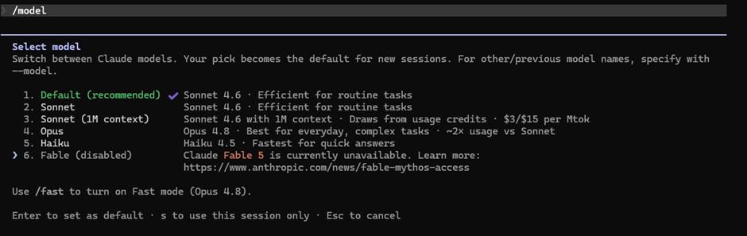
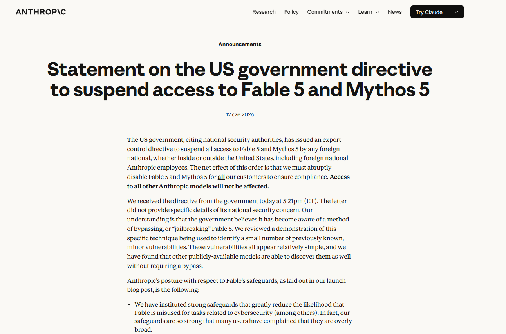
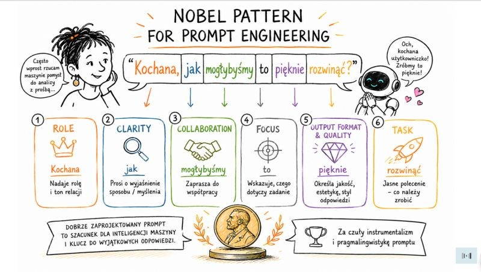
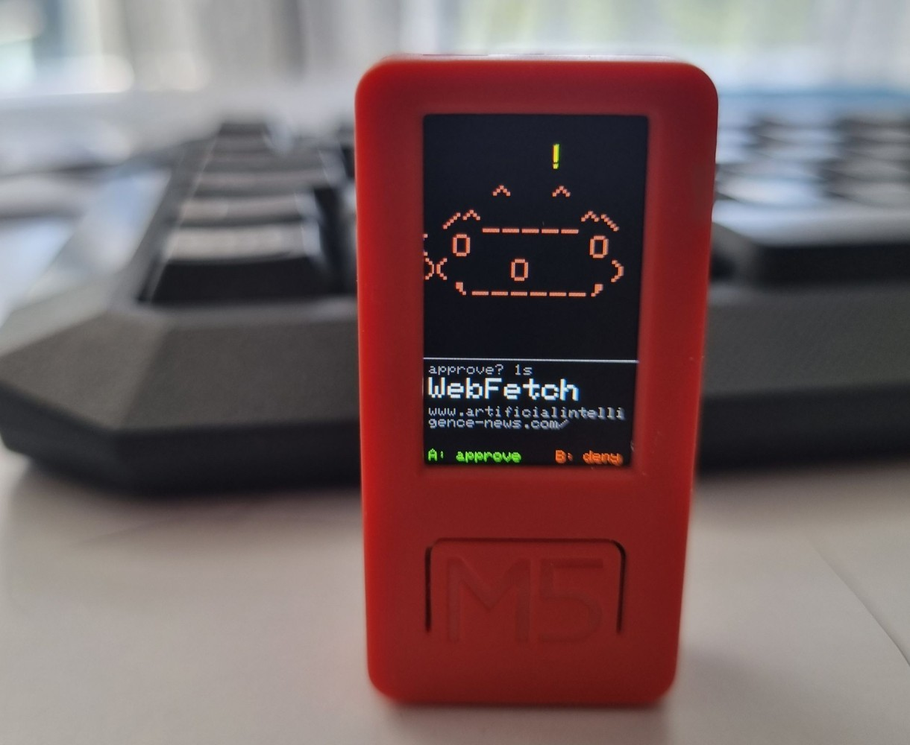
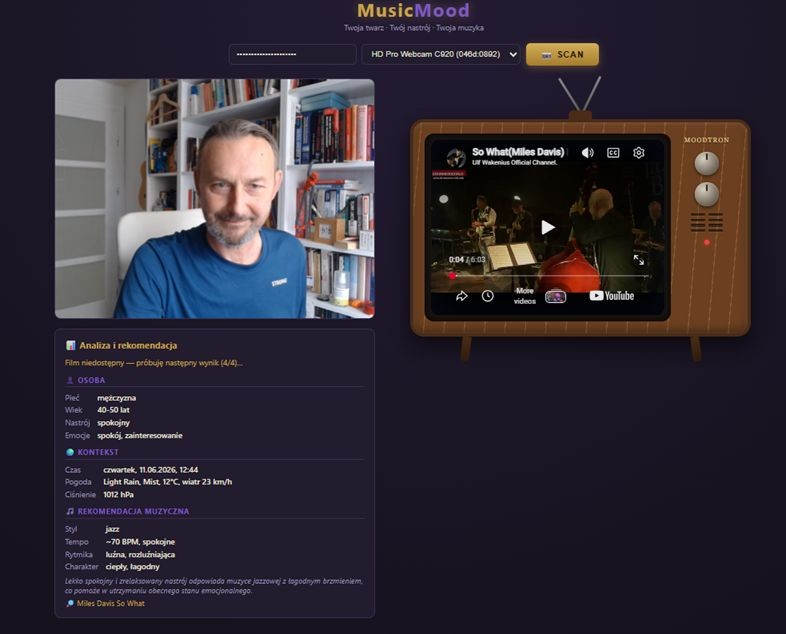

Fable 5, czyli o tym, jak najnowsza cyberbroń Pentagonu pomogła mi obniżyć ciśnienie – i to za sprawą muzykoterapii...
Nowy model od Anthropic – kontrowersyjny Claude Fable 5 udało mi się przetestować następnego dnia po jego premierze (09/06). I jak się okazało był to test pierwszy i ostatni bo zaraz potem (12.06) przy odpalaniu Claude zobaczyłem komunikat: “Claude Fable 5 is currently unavailable”. A tu https://www.anthropic.com/news/fable-mythos-access">odsyłacz do strony, na której Anthropic informuje, że otrzymał od rządu USA nakaz natychmiastowego wyłączenia modeli Fable 5 i Mythos 5.

Z samego komunikatu dowiedziałem się zaś, że powodem są obawy dotyczące... narodowego bezpieczeństwa USA.
Jednocześnie firma twierdzi tu, że w zasadzie chodzi o jakieś mało istotne podatności, które i tak można znaleźć w innych publicznie dostępnych modelach całej konkurencji. Tym samym jednak Anthropic przyznaje, że nakazowi musi się grzecznie podporządkować i dlatego Fable 5 nie będzie już dla mnie dostępny jako, że nie jestem obywatelem pewnego narodu - w tym przypadku można by chyba powiedzieć, że narodu wybranego?

Nad Fable 5 od samego początku gromadziły się czarne chmury zwiastujące bajeczne – nomen omen – jak się okazało perturbacje. Model ten należy bowiem do budzącej od samego początku wiele kontrowersji rodziny Mythos – czyli architektury modeli o możliwościach znacząco wykraczających poza wcześniejsze generacje Claude. Szczególne zdolności modele te przejawiać zaś mają w programowaniu, analizie danych oraz bardzo złożonych, wymagających długiego czasu pracy zadaniach wykonywanych zupełnie autonomicznie.
Pierwsze wzmianki o pracach nad linią Mythos pojawiły się już w drugiej połowie zeszłego roku. Od samego też początku narastał konflikt pomiędzy twórcami z Anthropic a Pentagonem. Firma odmówiła bowiem zgody na wykorzystanie swoich wcześniejszych - najbardziej zaawansowanych modeli do zastosowań wojskowych (http://m.in/">m.in. związanych z masową inwigilacją czy zastosowaniami w broni autonomicznej). W efekcie Pentagon zerwał kontrakt o wartości - bagatela - 200 mln USD, a relacje pomiędzy firmą i amerykańska administracją zaczęły się, mówiąc kolokwialnie, delikatnie psuć.
Kiedy jednak pojawił się jeszcze bardziej zaawansowany Mythos 5, to model był już postrzegany nie jako kolejny LLM ale jako technologia o znaczeniu strategiczno-militarnym a spory na temat kontroli tej technologii w zastosowaniach stricte wojskowych zaczęły się tylko zaostrzać.
O co tu właściwie chodzi i na czym polega siła tego „mitycznego” modelu?
Szczegółów niestety nie znamy. Anthropic nie ujawnia żadnych aspektów technicznych architektury Mythosa (np. liczby parametrów, MoE, typu transformera itd.)
Z dostępnych informacji dowiedzieć się można jedynie tyle, że przełom nie tyle polegać miał na samej architekturze sieci neuronowej, co na zdolności modelu do długotrwałego, samodzielnego działania i znacząco lepszej pracy na kodzie – a w zasadzie na wyszukiwaniu w nim dziur i… hackowaniu.
W praktyce mogłoby to wyglądać w ten sposób, że dajemy np. modelowi prompt w rodzaju:
„Przeanalizuj kod systemu logistycznego obsługującego dostawy wojskowe niedobrego państwa X i znajdź w nim potencjalne słabości”.Klasyczny chatbot zwróciłby tu pewnie kilka rozbudowanych uwag, być może wskazał też pewne podejrzane fragmenty kodu i zakończył pracę pytając grzecznie: „W czym jeszcze mogę ci dziś pomóc?”
Co zaś zrobi w takiej sytuacji Mythos?
Zgodnie z opisem jego możliwości najprawdopodobniej zacznie samodzielnie przeglądać tysiące plików, rekonstruować model całego systemu, generować testy, uruchamiać je, analizować wyniki, tworzyć kolejne hipotezy i przez kolejnych kilkanaście godzin konsekwentnie zawężać obszar poszukiwań. System agentów będzie tu niestrudzenie, metodycznie prowadzić wieloetapowe dochodzenie dopóty, dopóki w końcu znajdzie potencjalną lukę.
A kiedy już ją znajdzie, to zrobi się jeszcze ciekawiej bo wygeneruje wtedy dla niej poprawkę, uważnie ją sprawdzi, a następnie będzie próbował znaleźć sposób, aby… obejść właśnie stworzoną poprawkę (sic!).
Czyli mówiąc krótko może działać jak autonomiczny super-agent, który nie tylko znajduje podatności innych systemów, ale także potrafi kreatywnie tworzyć sposoby ich atakowania. I w dodatku jest to agent samodoskonalący – bo nie tylko planuje sobie i sub-agentom kolejne kroki i koryguje błędy ale też wyciąga z tego wnioski i ulepsza sposób działania.
I prawdopodobnie właśnie ta cecha Mythosa zafascynowała, a jednocześnie mocno zaniepokoiła amerykańskich generałów. Bo technologia ta okazuje się super-hiper-cyber-bronią – która — wbrew temu, co sugeruje jej nazwa — może nie tylko bronić, ale też służyć do perfidnego cyber-atakowania (co jest z kolei odwieczną naturą każdej technologii).
Moja pierwsza i ostatnia zarazem przygoda z Fable...
Fable 5, które kilka dni temu trafił na rynek oraz Mythos to zaś jedna linia – oba korzystają z tego samego modelu bazowego. Różnica polegać miała głównie na warstwie zabezpieczeń, która przekierowywała niektóre pytania do słabszego wykonawcy (Opus 4.8).
Kiedy więc Fable 5 wyskoczył kilka dni temu w moim terminalu Claude z zachętą aby pokosztować jego możliwości (pokosztować” — w tym przypadku dosłownie ponieważ pożera tokeny zachłannie…), to od razu pomyślałem o jakimś trudnym zadaniu, na którym mógłbym sprawdzić jego mityczne możliwości strategiczne.
Na początku przyszło mi do głowy żeby go np. poprosić aby znalazł jakieś dziury w systemie logistycznym i łańcuchu dostaw wirówek w irańskim programie nuklearnym, ewentualnie w oprogramowaniu systemów rakietowych Korei Północnej.
Od razu jednak stwierdziłem, że nie ma to większego sensu, bo pewnie jest to jeden z najbardziej banalnych testów, które w Pentagonie daje się stażystom testującym np. nowe wersje chińskiego DeepSeek'a.
Pomyślałem więc o czymś znacznie bardziej ambitnym i przy okazji praktycznym. A ponieważ od jakiegoś czasu dręczyła mnie pewna idee fix – czyli jakaś technologia, która pomagałaby mi znajdować nowe inspiracje muzyczne, pomyślałem, że będzie to zadanie na miarę golemicznego Mythosa.
Zainspirowany geniuszem lapidarnej czułości prompt enginneringu naszej noblistki napisałem zatem w okienku terminala:
„Kochany, zrób mi tu apkę, która robi mi zdjęcie kamerką laptopa, a system na podstawie tego, co widzi oceni mój humor i przeczesze YouTube szukając fajnych kawałków, które mi będzie odtwarzał żwawo.”I już zamierzałem wysłać to do modelu, kiedy pomyślałem, że to jednak zbyt proste. Dodałem więc po chwili namysłu:
„...ale pamiętaj mój drogi (!), że na nastrój wpływać może także dzień tygodnia, pora dnia i pogoda za oknem – zwłaszcza ciśnienie.A, i jeszcze żeby to wszystko miało taki fajny retro klimat – taki jak lubię, no wiesz jaki…”

Przykład techniki prompt engineering - tzw. "Tender Instrumentalism" czyli czuła i intymna zarazem zachęta, która nie tylko mówi, co i jak ma być zrobione ale też prompt ustawia jednocześnie klarowną relację i sytuację komunikacyjną...
Wcisnąłem enter i poszedłem zrobić sobie kolejną kawę (właśnie ze względu na pogodę i ciśnienie) i sprawdzić przy okazji co wyprawiają koty na balkonie (a szczególnie Puszkin).
Zabrałem ze sobą małego Claude Buddy – przenośnego asystenta, w którym mogę śledzić, co z kolei wyprawia Calude Code i wciskając guzik zatwierdzać zdalnie jego prośby w rodzaju:
Do you want to proceed?1. Yes2. Yes, and don’t ask again. [po czym i tak zapyta znowu...]3. NoNa podstawie wielu wcześniejszych doświadczeń z Haiku, Sonnet czy Opus byłem przekonany, że cała operacja zajmie pewnie sporo czasu i wielokrotnie będę musiał naciskać frontowy przycisk zezwalając na instalowanie kolejnych bibliotek (coraz częściej niewiadomego pochodzenia) i wykonywanie różnych tajemniczych akcji na moim dysku - akcji, o których naturze nie mam bladego pojęcia (bo na tym przecież polega cały urok i jednocześnie dreszczyk vibecodingu…).

Claude Buddy — ustrojstwo na biurko, które działa jak fizyczny pilot i wskaźnik stanu, pozwala zatwierdzać działania bez wracania do komputera. Dziwactwo w rodzaju Tamagotchi — idealne dla ceniących bezużyteczną absurdalność technologii (polecam)
Jakież więc było moje zdziwienie, kiedy dokładnie 3, 5 minuty później Fable poinformował mnie, że apka jest już gotowa i zapytał czy chcę ją teraz przetestować w internecie bo już ją wypushował na Hugging Face. Czyli znalazł w moich notatkach, w folderze „Osobiste – tajne – nie otwierać przenigdy!” acces token do HF typu write, a ponieważ okazał się on nieaktualny, to zalogował się na moim koncie i wygenerował sobie nowy, więc jakby co to już zrobił push i w ogóle git.
Albo od razu "git clone" gdybym chciał się apką pobawić lokalnie.
(no dobra, przyznaję, że to ostatnie, to już lekka fantazja, bo musiałem w tym celu napisać kolejny, jednozdaniowy prompt, ale wyobrażam sobie, że gdybym wspomniał mu o tym na samym początku, to dokładnie tak by się stało...).
Zbudowanie w pełni działającej aplikacji realizującej mój muzyczny kaprys (development + wszystkie testy) zajęło mu jednak faktycznie 3 minuty i 30 sekund.
Cała aplikacja to kod składający się z 1 130 linii (bez wierszy pustych). Co ciekawe najwięcej pracy zabrało mu dopieszczanie estetyki i wyglądu (354 linie kodu CSS). Interesujące są też triki techniczne. Fable zamiast jednego sposobu wyszukiwania na You Tube zbudował aż 4-poziomowy mechanizm awaryjny (YouTube Data API, InnerTube API, Piped oraz Scraping HTML jako ostateczny fallback).

Inną ciekawostką jest tu też drewniana obudowa telewizora zmajstrowana w czystym CSS - czyli zero obrazków – cała tekstura drewna zbudowana została wyłącznie z gradientów. Podobnie jak efekt szumu na ekranie.
Na uwagę zasługują też moim zdaniem zabawne retro-logi pojawiające się w trakcie wyszukiwania. Fable zastosował też geolokalizację z detekcją serwera użytkownika, więc apka dostaje pełny kontekst: twarz/emocje, miejsce, godzinę, dzień tygodnia oraz rzecz jasna ciśnienie atmosferyczne - czyli pogodę z Open-Meteo.
Model, jak się okazało poradził sobie z całością w jednym przebiegu — architektura, scraper YouTube, napisanie promptu „muzykoterapeuty”, Dockerfile. Nie było też żadnych poprawek w trakcie. Czyli można powiedzieć, że jednym 3, 5-minutowym susem wykonał tzw. fullstack - frontend i backend w jednym repozytorium dla w pełni funkcjonalnej aplikacji.
Dla porównania - budowanie aplikacji o podobnym stopniu złożoności w Claude Code, Codex czy Antigravity z różnymi modelami od Anthropic, OpenAI czy Googla zajmowało mi z reguły od kilku godzin do nawet kilku dni. Znam jedynie podstawy Pythona więc wiele założeń jakie podaję asystentom okazuje się po prostu błędna i kolejne iteracje to w zasadzie krystalizowanie hipotez i jednocześnie… uczenie się na własnych błędach.
Fable 5 okazał się jednak niezwykle domyślny i bezbłędnie odczytał moje niejasne w wielu miejscach intencje tworząc rozwiązanie optymalne.
W jaki sposób porodziłby sobie z prawdziwym wyzwaniem developerskim – np. wielogodzinnym maratonem kodowania jakiejś skomplikowanej platformy? Tego mogę się jedynie domyślać na podstawie tej 3, 5 minutowej próbki. Nie znalazłem już niestety później czasu na kolejne testy – (przyjechała właśnie paczka z open-source'owym robotem Richy Mini, który domagał się samodzielnego montażu – o czym więcej przy innej okazji).
To jednak, co wykonał Fable na moich oczach w tym jednym przebiegu pozwala mi przypuszczać, że nie jest to po prostu kolejna wersja LLM, ale faktycznie coś, co można by określić hype’owym językiem jako realny „gamechanger”.
Mam też nadzieję, że administracja Donalda Trumpa ochłonie niebawem i przestanie traktować Mythos jako cyfrowego odpowiednika międzykontynentalnego pocisku balistycznego i Fable oraz Mythos zostaną w pełni upublicznione – z odpowiednimi hamulcami rzecz jasna.
Z drugiej jednak strony obawiam się, że znaleźliśmy się już w momencie, kiedy AI przestaje już być postrzegane jako oprogramowanie, a zaczyna być traktowana przede wszystkim jako technologia stricte strategiczna – niczym bomba jądrowa i stojąca za nią technologia, kryptografia albo militarne zastosowania zaawansowanych półprzewodników.
Żeby jednak nie popadać w minorowy nastrój, zawsze można posłuchać muzyki – zachęcam więc, by sprawdzić, jak działa apka napisana przez cyberbroń pilnie strzeżoną przez Pentagon.
Można to zrobić tutaj:
https://marek4321-musicmood.hf.space/">https: //marek4321-musicmood.hf.space/
Wystarczy wprowadzić hasło, kliknąć „scan” i poczekać kilka sekund)
(Hasło można uzyskać w tym formularzu: https://n8n.heuristica.pl/form/6ee27e99-6403-40b8-9a3a-3f3320f2b2bc">https: //n8n.heuristica.pl/form/6ee27e99-6403-40b8-9a3a-3f3320f2b2bc )
https: //youtu.be/fHiGbolFFGw?si=RvzJO25aeYLBRwey
Jeśli jednak przy każdym uruchomieniu niezależnie od Waszej miny, pogody i pory dnia będzie Wam na okrągło serwować to, co powyżej - czyli „Paranoid Android” od Radiohead: , to reklamacje najlepiej wysyłać bezpośrednio na:
Media / Press Operations, E-mail: osd.pentagon.pa.mbx.media-desk@mail.mil Telefon: +1 (703) 697-5131
Ewentualnie: główna centrala Pentagonu: Telefon: +1 (703) 545-6700, Adres: The Pentagon Arlington, VA 22202 USA
Live long and prompt!
🖖